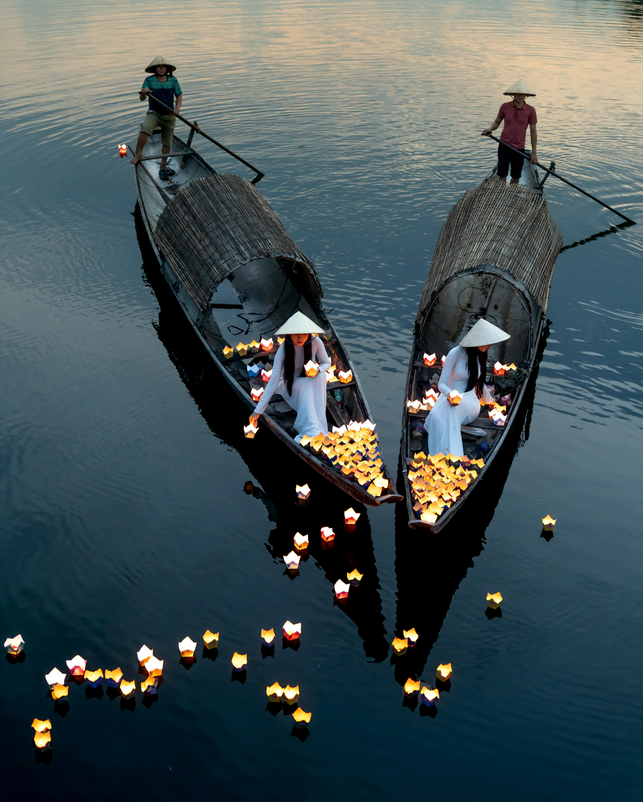
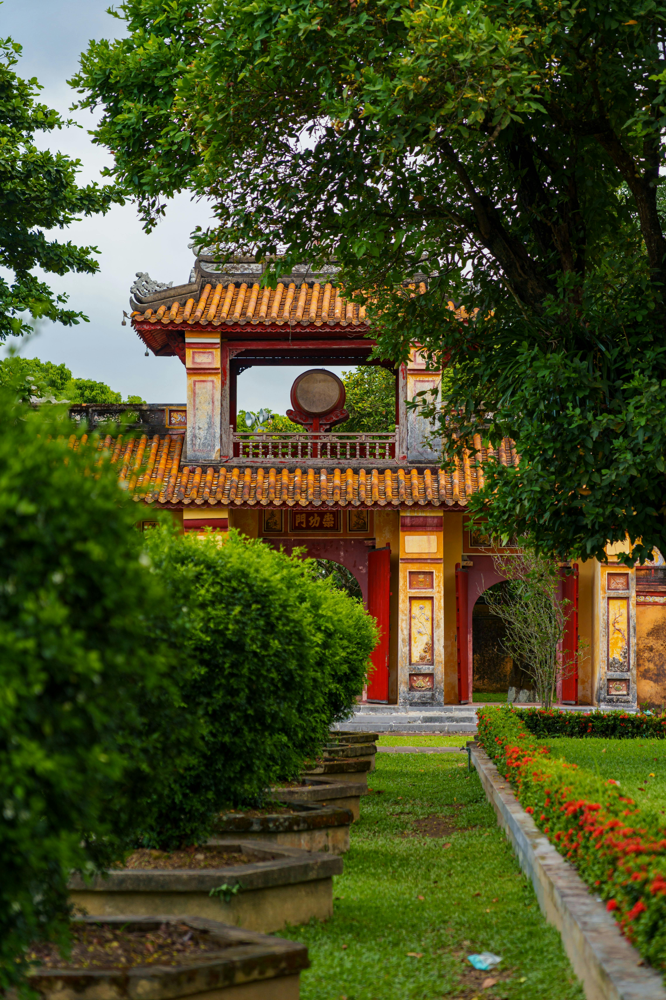
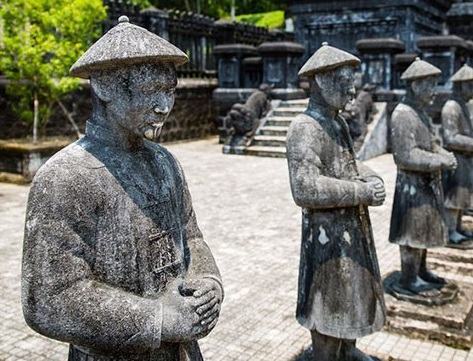
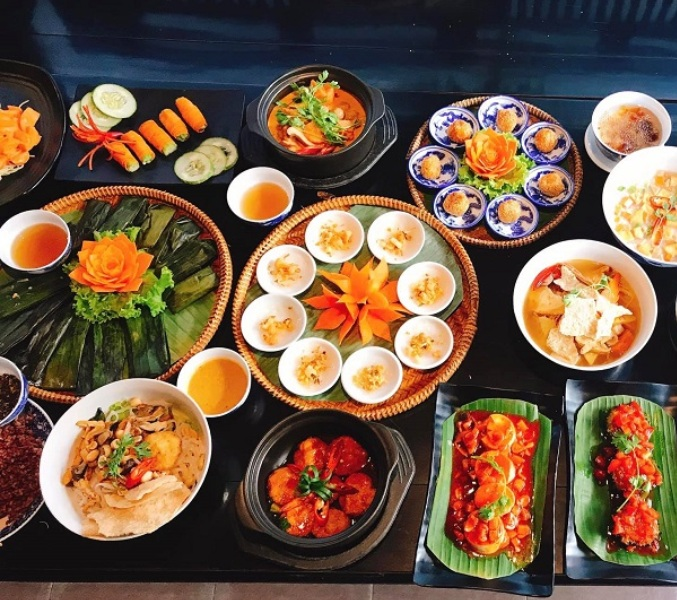
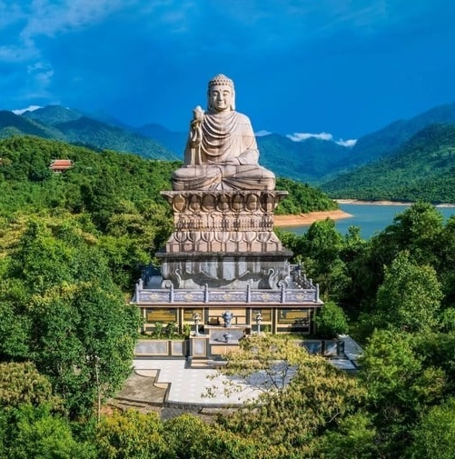
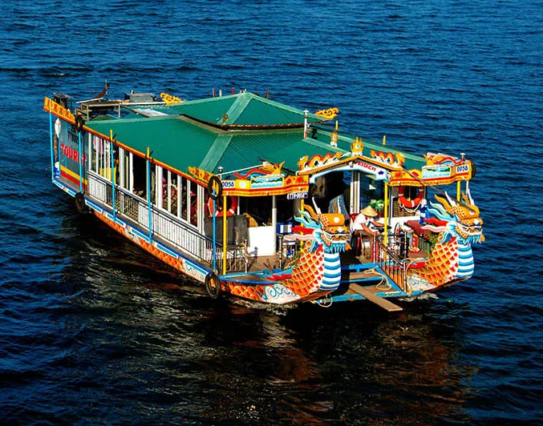
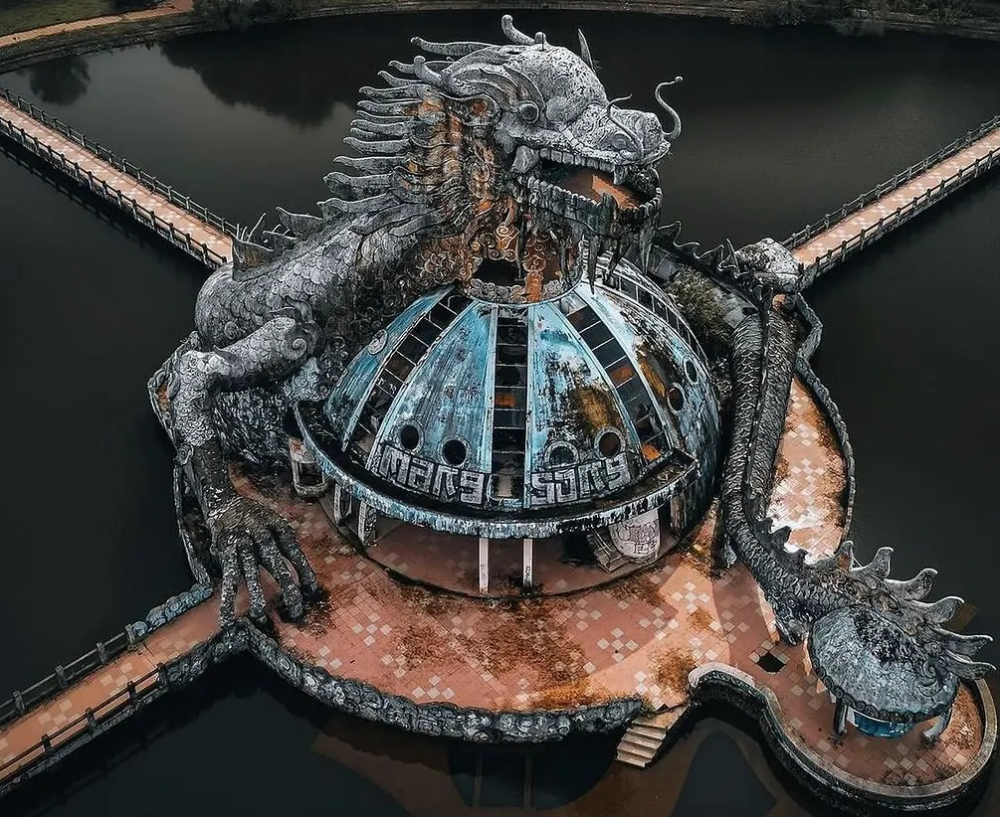

Hue Imperial City: A Timeless Journey
Discover Hue
Hue is a city chock-full of stories. The Kings of the Nguyen Dynasty built their feudal capital along Hue’s fertile riverbanks and atop its forested hills, but their imperial legacy is just one of many reasons to visit.

Discover Hue
Hue is a city chock-full of stories. The Kings of the Nguyen Dynasty built their feudal capital along Hue’s fertile riverbanks and atop its forested hills, but their imperial legacy is just one of many reasons to visit.

Discover Hue
Hue is a city chock-full of stories. The Kings of the Nguyen Dynasty built their feudal capital along Hue’s fertile riverbanks and atop its forested hills, but their imperial legacy is just one of many reasons to visit.
Discover Hue
Hue is a city chock-full of stories. The Kings of the Nguyen Dynasty built their feudal capital along Hue’s fertile riverbanks and atop its forested hills, but their imperial legacy is just one of many reasons to visit.


Hue Imperial City: Recommended Itineraries
Hue, the ancient capital of Vietnam, is a city filled with rich history, stunning architecture, and breathtaking natural beauty. Whether you're a history enthusiast, a nature lover, or someone looking to experience the local culture, Hue offers something for everyone. Here are some recommended itineraries to help you make the most of your visit, from exploring the imperial citadels and royal tombs to relaxing by the Perfume River and enjoying the local cuisine.
| Itinerary Type | Best For | Recommended Places | Duration | More Info |
|---|---|---|---|---|
|
Historical Journey  |
History lovers & culture seekers |
Imperial City, Thien Mu Pagoda, Tomb of Khai Dinh, Tomb of Tu Duc |
1 Day | View More |
|
Food Lover's Tour  |
Street food explorers | Dong Ba Market, Com Hen, Bun Bo Hue | Half Day | View More |
|
Nature Escape  |
Scenic travelers | Lang Co Beach, Bach Ma National Park | 1-2 Days | View More |
|
Romantic Getaway  |
Couples | Perfume River cruise, Hue Royal Tea | Evening | View More |
|
Family-Friendly Trip  |
Families with kids | Hue Water Park, Thanh Toan Bridge, Citadel | Full Day | View More |